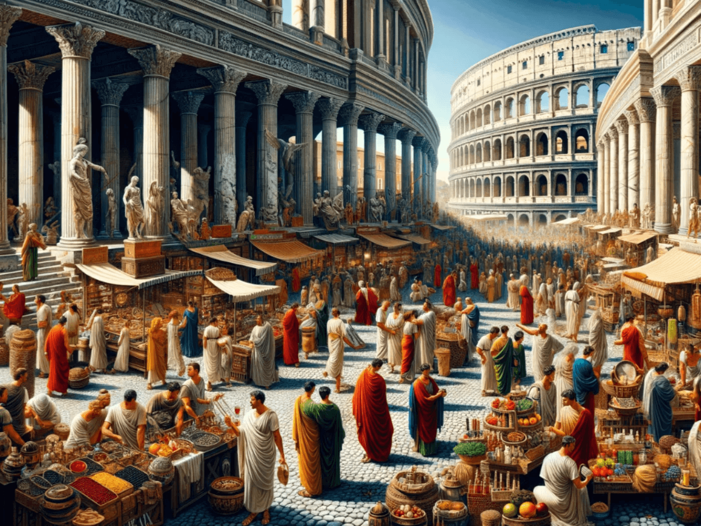
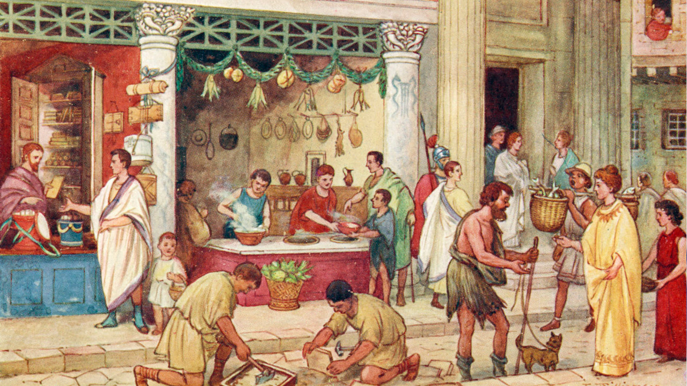
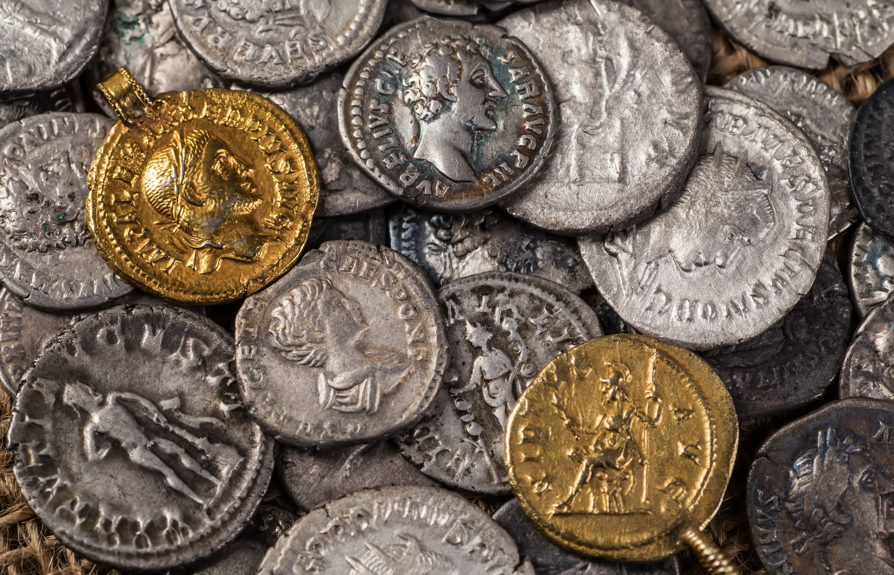
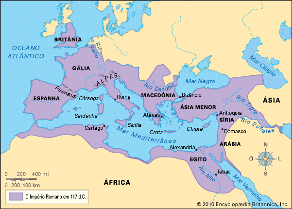

O QUE FOI?
O comércio funcionava como uma vasta rede de circulação de mercadorias, moedas e conhecimentos. Impulsionado pela expansão territorial e pelo crescimento urbano, esse sistema abastecia as cidades com recursos indispensáveis e interligava províncias distantes. Embora baseado na agricultura e no trabalho escravizado, o comércio era um instrumento estratégico do Estado, que usava impostos e o controle de rotas para financiar o exército e manter o poder de Roma.
O COMÉRCIO DE ESCRAVOS
O comércio de escravos foi uma atividade de grande importância econômica para o Império Romano, sendo responsável por fornecer mão de obra para os setores agrícola, doméstico, artesanal e minerador. Fortalecida pela expansão territorial de Roma, que aumentou a quantidade de pessoas feitas prisioneiras e escravizadas, essa atividade ajudava a manter a produção e as relações de dependência que eram essenciais para o funcionamento da economia do Império.
ESTRUTURA DO COMÉRCIO ROMANO

IMPORTAÇÃO E EXPORTAÇÃO
SAIBA MAIS
A importação acontecia quando Roma recebia produtos de outras regiões do Império. Entre os principais produtos estavam trigo, azeite, vinho, metais, tecidos, madeira, pedras e outras matérias-primas. Esses produtos eram importantes para abastecer principalmente as grandes cidades, que possuíam uma população numerosa e precisavam de alimentos e outros materiais vindos de diferentes partes do território romano.
A exportação acontecia quando produtos produzidos em Roma ou nas províncias eram enviados para outras regiões do Império. As províncias produziam alimentos, matérias-primas e produtos artesanais que podiam ser destinados a outras partes do território. Assim, uma região podia fornecer produtos enquanto recebia outros, mantendo a circulação de mercadorias e a integração econômica entre as diferentes regiões romanas.

MERCADOS E FEIRAS
SAIBA MAIS
Os mercados e as feiras eram importantes espaços de comércio nas cidades romanas. Neles, eram vendidos e trocados diferentes tipos de produtos, como alimentos, tecidos, cerâmicas, ferramentas e outros objetos usados no dia a dia. Com o crescimento das cidades, esses espaços ganharam ainda mais importância, pois muitas pessoas dependiam de produtos trazidos de outras regiões.
Além de funcionarem como locais de compra e venda, os mercados e as feiras também movimentavam o trabalho de diversos profissionais. Artesãos, ferreiros, comerciantes e outros trabalhadores participavam da atividade comercial, enquanto as ruas das cidades também serviam como espaços de trabalho e comércio. Dessa forma, mercados e feiras faziam parte da vida econômica e urbana do Império Romano.

MOEDA E SISTEMA ECONÔMICO
SAIBA MAIS
A moeda era usada pelos romanos para pagar por produtos e serviços, facilitando as compras e vendas nas cidades e entre diferentes regiões do Império. Ela também permitia que comerciantes recebessem pelos produtos vendidos e que os impostos fossem cobrados pelo Estado. Dessa forma, o dinheiro ajudava a organizar as atividades comerciais e a circulação de riquezas.
A economia romana dependia principalmente da agricultura, da produção de diferentes produtos nas províncias, do comércio e do trabalho escravizado. Os impostos cobrados pelo Estado também faziam parte desse sistema. Os recursos obtidos ajudavam a manter o exército, as cidades e a administração do Império.
Principais Moedas Romanas
-
Sestércio: A moeda de bronze ou latão. Muito utilizada no comércio do dia a dia para valores intermediários e em contratos oficiais do governo. Valia exatamente 4 Asses
-
Denário: A moeda de prata. Era a moeda mais famosa e a base de toda a economia romana, equivalente a uma diária de trabalho de um cidadão comum. Valia exatamente 4 Sestércios
-
Áureo: A moeda de ouro. Tinha o valor mais alto do império e era usada para grandes transações comerciais, fortunas e pagamentos de generais. Valia exatamente 25 Denários

ESPECIALIZAÇÃO REGIONAL
SAIBA MAIS
As regiões do Império Romano possuíam diferentes recursos naturais, produtos agrícolas, matérias-primas e técnicas de produção. Por isso, cada região podia produzir determinados produtos em maior quantidade e fornecê-los para outras partes do Império. As províncias, portanto, não produziam apenas para seu próprio consumo, mas também participavam das trocas comerciais.
Uma província podia fornecer alimentos ou matérias-primas, enquanto outra fornecia produtos manufaturados ou outros recursos. Essa relação criava uma rede de trocas entre regiões muito distantes e fazia com que diferentes partes do Império dependessem umas das outras. Assim, a especialização regional contribuía para a integração econômica do território romano.
O que as principais regiões mais vendiam
-
Egito e Norte da África: era exportado o trigo crucial para alimentar a população de Roma, além do papiro e de grandes volumes de azeite de oliva e animais exóticos.
-
Hispânia: era exportado o azeite de oliva de uso cotidiano (maior produtora do império), o molho de peixe garum e metais preciosos como ouro e prata.
-
Gália: era exportado o vinho em larga escala comercializado em barris, além de tecidos de lã e cerâmicas utilitárias para abastecer o restante das províncias.
-
Península Itálica: eram exportados vinhos finos de luxo (como o Falerno) e produtos manufaturados de alto valor, como ferramentas de metal e cerâmicas refinadas.